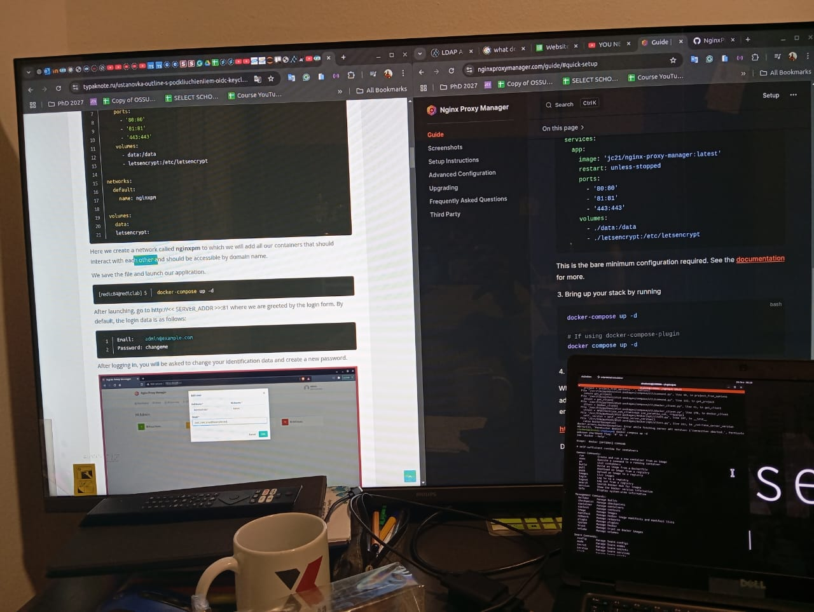

Hi, my name is Ikechukwu John Chukwu and I love playing chess indoors and football outdoors.
Specialization: Network Engineering, IT Support, Cybersecurity Engineer
About me

I’m a cybersecurity engineer. I secure client systems, recover access to resources clients have lost, and
train staff to spot and handle security issues.
$
whoami ikechukwu, cyber security engineer $ cat focus.txt linux hardening,
siem detection, cloud security, applied crypto $ status open to research
collaborations and security roles
Working on...
Enterprise Linux Security Hardening
I built a Linux security auditing and hardening toolkit that checks a system and reports how to fix it.
What it does
Audits user account permissions
Identifies insecure SSH configurations
Checks firewall rules
Detects unnecessary services
Generates a security assessment report
Fedora/Linux
Bash
Python
firewalld
SSH
Deliverable: a reusable security audit script, a hardening guide and a before/after
assessment.